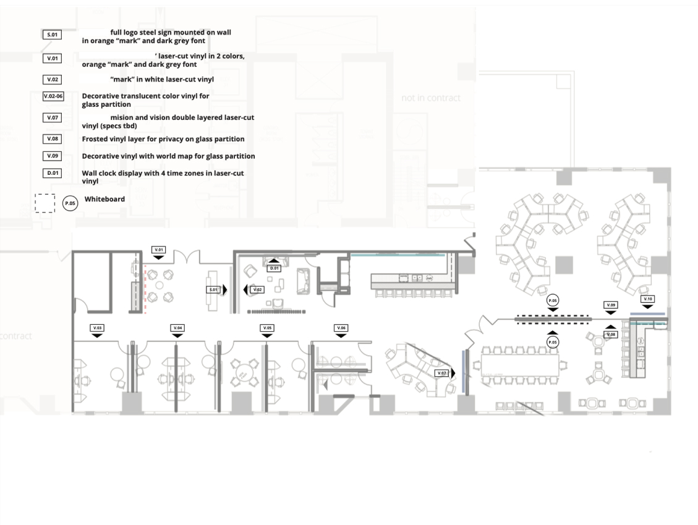
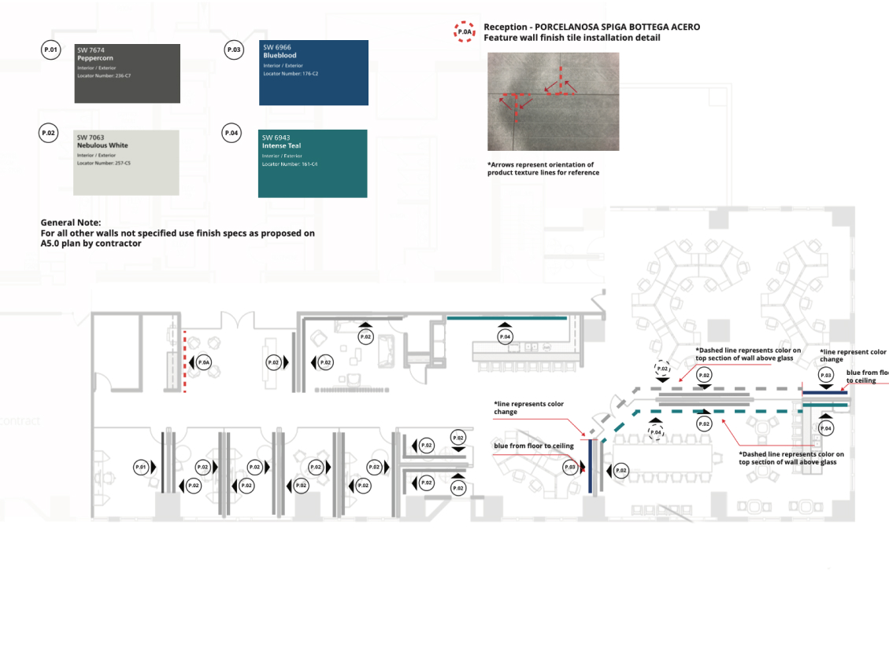

The brief
Across two roles, I worked on office interiors and environmental branding for a global organization. The offices had different layouts, existing finishes, and local suppliers. The work called for a shared design direction that could be adapted to each location and documented clearly enough for local teams to price, fabricate, and install.
The earlier program focused on selected rooms and shared spaces. The later work included support for the Toronto office relocation and a rebranding rollout across international offices.
Developing the workplace design program
I documented existing conditions, took site measurements at several offices, and coordinated field information remotely where needed. I drafted floor plans and elevations in AutoCAD and produced SketchUp visualizations to show how the proposed finishes, signage, and graphics would work in each space. I presented the concepts and preliminary budgets for executive review.
After approval, I developed the drawings and specifications for installation. The work included feature walls, paint finishes, dimensional signage, and decorative and privacy treatments for glass.
Specifying for different markets
I researched a ceramic wall finish that could be sourced in the principal markets and confirmed availability with the supplier before specifying it. For paint, I documented locally available selections that supported the shared palette. The drawings identified where finishes and graphics belonged, and the specifications gave fabricators and installers the dimensions and material requirements they needed.
I coordinated procurement, fabrication, and installation with local suppliers and contractors. Schedules and itemized trackers recorded responsibilities and completion dates. I reviewed completed work on site or remotely against the approved drawings and specifications.


Supporting the Toronto office relocation
I worked alongside the Facilities Manager as part of the relocation team. I reviewed the architect’s floor plans, provided feedback on the proposed layout, and contributed to space-planning approvals. I also evaluated furniture proposals and approved orders within my scope.
For meeting rooms and offices, I used the architectural plans to quantify the glazing that needed privacy treatment. I compared vendor quotations, approved the budget and design proofs, and attended installation to review placement and finish quality before accepting the work within my scope.
Coordinating the office rebranding rollout
I led the rollout of updated finishes, signage, and environmental graphics across multiple offices. I coordinated the collection of drawings and arranged local measurements where records were incomplete. Plan markups showed what to remove or replace and where new elements would go.
The scope varied by office. Some locations needed broader finish and signage updates, while others needed targeted changes. I coordinated internal stakeholders, local office teams, vendors, and fabricators to adapt the approved direction to each site. The priority offices were completed by February 2026.